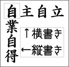
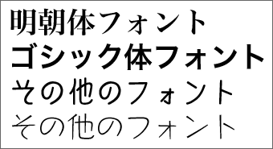
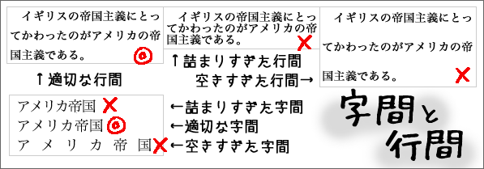
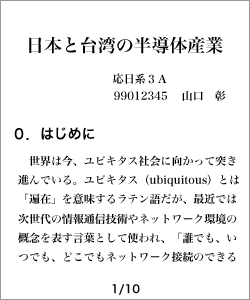
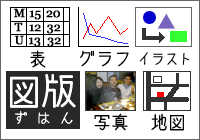

レポートの標準的な体裁
レポートには標準的な体裁がある。
レポートを書くときに、体裁について指示がある場合は、その指示に従う。特に指示のないときには、標準的な体裁で作成しなければならない。
体裁が整えられていないレポートは受理されないこともあるので注意すること。
以下に、標準的な書式と標準的な用紙について説明する。
- 標準的な書式
- 標準的な用紙
標準的な書式
書字方向

コンピュータで作成する場合も手書きの場合も、レポートの書字方向は横書き（左→右）が標準である。
縦書きを特に指定された場合以外は、横書きにするべきである。
文字と文字サイズ
レポートをコンピュータで作成する場合、文字と文字サイズは次のようにする。
- 本文の文字は10〜12ポイントの明朝体にする
- タイトル（題名）や見出しは、大きめの文字にする
- 文字の色は、すべて黒にする
日本語の場合、レポート本文の文字（フォント）は明朝体が基本である。タイトル（題名）や見出しにゴシック体を使うことがあるが、それ以外の文字（フォント）は使わないのが標準である。

タイトル、見出し、本文の文字は、それぞれ次のように設定すればよいだろう。
文字サイズの設定の例：
- タイトル＝18ポイント（明朝体、太字）
- サブタイトル＝16ポイント（明朝体、太字）
- 署名＝14ポイント（明朝体）
- 見出し＝14ポイント（ゴシック体）
- 本文＝12ポイント（明朝体）
見本：
哈日ブームと新外来語
—新外来語の成立背景について—
鍾 季儒
１.なぜ外来語が必要なのか
文法と音声に比べて、語彙は言語の中で一番変化に応じて変わる部分だと言われている。魏永紅・魏永佳（1996: 51）が「歴史の発展、社会の変化、地域間の差異などの変化はすべて語彙によって反映するようになっている」と述べているように、語彙の変化は色々な分野の変貌を物語っている。
世界諸言語には多かれ少なかれ、その言語における外来語がある。外来語は世界各国の文化交流につき、必ず生じる現象である。（以下略）
手書きの場合は、レポート用紙の罫線に合った大きさで書けばよい。
字間と行間
コンピュータで作成する場合は、字間と行間が詰まりすぎたり、空きすぎたりしないようにする。基本的には、ワープロソフトの標準設定を使えばよいだろう。

手書きの場合は、レポート用紙の罫線に従えばよい。
余白
コンピュータで作成する場合は、余白を適切な大きさに設定する。上の余白より下の余白を少し大きくするのが、見やすくするポイントである。
Ａ４サイズの場合、次のように設定すればよいだろう。
Ａ４サイズでの余白の設定の例：
- 上：20mm、右：22mm、下：25mm、左：22mm
- 上：25mm、右：20mm、下：30mm、左：20mm
手書きの場合は、レポート用紙の罫線に従えばよい。
題名と表紙
レポートには表紙をつけた方がよい。表紙には、次のような内容を記す。なお、表紙にイラストや写真などは不要である。
題名、科目名（担当者）、所属、学籍番号、氏名、提出日または作成日
表紙の書き方に特別なきまりはないので、必要な項目をわかりやすく（見やすいように）書けばよい。


表紙(左)と１ページ目(右)の書き方の例
図版

表、グラフ、イラスト、写真、地図など、視覚的に情報を表現するものをまとめて「図版」という。図版は、文字（文章）では表わしにくい内容を効果的に表現することができる。
なお、レポートでは文字の色は、すべて黒にするが、図版はカラーでも構わない。
ただし、レポートでは、論述や説明のために必要な図版だけを使うようにする。レポートの内容と関係のないイラストなどを載せてはいけない。
レポートで図版を使うときには、必ず種類ごとの通し番号をつけるようにする。
通し番号の付け方（例）
グラフ１ → グラフ２ → グラフ３
表１ → 表２ → 表３
図１ → 図２ → 図３
写真１ → 写真２ → 写真３
また、それぞれの図版には、通し番号だけでなくタイトルをつけた方がよい。タイトルは、表やグラフの場合は上に、写真や図の場合は下に書くことが多い。
レポートの本文では、通し番号で指すようにし、図版が何を示しているのかもできるだけ本文で説明した方がよい。たとえば、次のように書けばよい。
- 「３年生の各クラスの基本データを表７に示す。」
- 「表３は、2005年と2006年の日本語能力試験合格者数を示したものである。」
- 「図２に示したように、凶悪犯罪の処罰は、逮捕、起訴、死刑の順で行なわれる。」
- 「アメリカでの凶悪犯罪は、『地域１』に分類される地域で急増しているのである（グラフ３参照）。」
参考文献
レポートの末尾には、参考文献リストをつけなければならない。
参考文献リストには、レポートを書くときに参考にした文献（書籍や雑誌）や資料（新聞やウェブサイト）、レポート本文で引用した文献や資料をすべて書かなければならない。
参考文献リストには、一定の書式がある。
- 著者名のアイウエオ順に並べる
- 著者名・発行年・タイトル・出版社を書く
- 書籍名は二重カギカッコ（『』）でくくる
- 論文名はカギカッコ（「」）でくくる
参考文献リストは、次のように書けばよいだろう。
参考文献
- 泉井久之助（1981）『言語の構造』 紀伊国屋書店．
- ガイヤー,ホルスト（1973）『馬鹿について』（満田久敏・泰井俊三訳） 創元社．
- 簡月真（2000）「台湾の日本語」,『国文学 解釈と鑑賞』65(7), pp.113-114, 學燈社.
- 喜多壮太郎（2002）『ジェスチャー』金子書房.
- 丸山圭三郎編（1985）『ソシュール小事典』 大修館書店．
参考文献リストの書き方について、より詳しいことは「参考文献の書き方」を参照。
標準的な用紙
使える紙と使えない紙
コンピュータで作成する場合は、Ａ４サイズの白色プリンタ用紙（共用紙）を使う。
手書きの場合は、専用のレポート用紙を使う。
- レポートに使える紙
-
- Ａ４サイズ・白・プリンタ用紙
- Ａ４サイズ・白・レポート用紙
- レポートに使えない紙
-
- カラーのもの
- キャラクターなどのイラストがあるもの
- ノートを切ったもの
- メモ用紙
- 裏紙（プリントされた紙の裏面）
- 穴のあるもの（ファイリング用紙、ルーズリーフ）
- 大きさが変則的なもの
- 厚すぎたり薄すぎるもの
- 汚いもの
プリント・文字の品質
コンピュータで作成する場合は、標準モード以上の品質でプリントする。
手書きの場合は、黒のペンかボールペンを使う。ブルーブラックの万年筆は使ってもよいが、青色のボールペンなどは避ける。鉛筆やシャープペンシルは使わない。また、文字はできるだけていねいに書く。
紙の綴じ方
複数枚のレポートでは、バラバラにならないように用紙を留めなければならない。左上をホチキス（ステイプル）で（２カ所）留めるのがよい。角を折っただけでは、留めたことにならない。
クリップ（ゼムクリップ、Ｖ型ゼムクリップ、ワニクリップ［ガチャ玉ともいう］、ターンクリップ、サイドレバークリップなど）で留めてもよいが、ホチキスで留めた方が確実である。
なお、クリアフォルダ（クリヤーホルダ）を使うときは、レールクリアフォルダ（レール式クリヤーホルダー）にする。レール式でないクリアフォルダ（ふつうのクリアフォルダ）を使うときには、左上をホチキス（ステイプル）などで留める。
ページ番号
複数枚のレポートでは、右上か下（右か中央）の余白にページ番号を記す（プリントした後で手書きで加えてもよい）。ページ番号は、算用数字がふつうだが、ローマ数字でもよい。なお、『ページ数/総ページ数』の形でもよい。
電子文書の場合
紙にプリントせず、電子メールなどで電子文書として提出する場合は、次のようにする。
- PDF形式（.pdf）にする（MS word形式にしないこと。台湾ではあまり多く利用されていないが、電子文書の国際的な事実上の標準 de facto standard はPDF形式である）
- 文字サイズなどの書式は紙にプリント場合と同じにする
- 表紙も紙にプリント場合と同じにする
- ページ番号をつけた方がよい（評価者がコメントがしやすくなる）